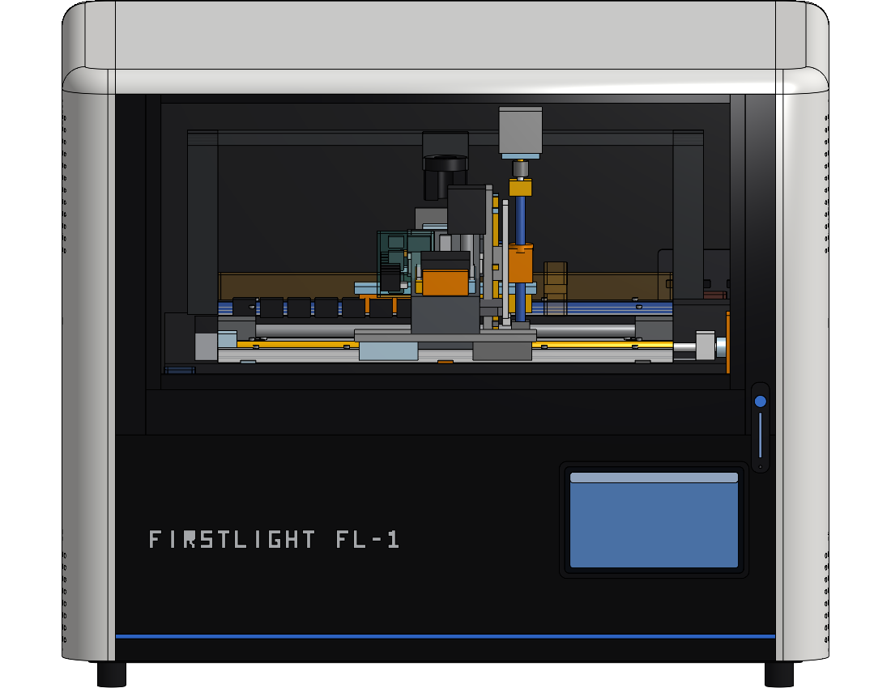
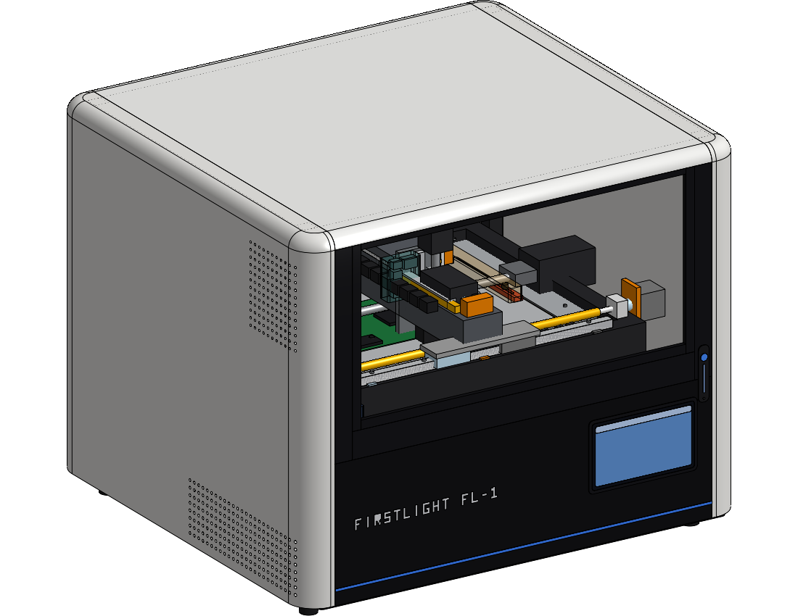
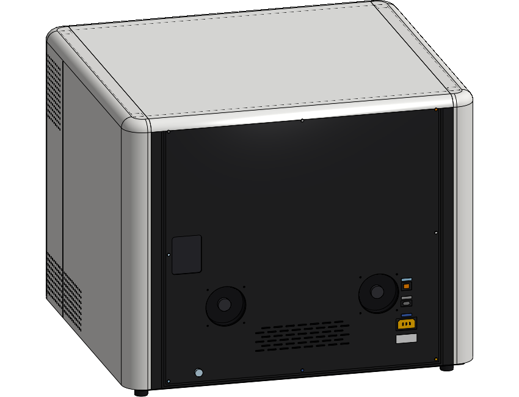

FirstLight FL-1 takes a never-powered board straight from the fab and autonomously answers "does it work — and if not, why not." Fixture the board, load its manifest, close the glass, walk away. The machine runs vision registration, a pre-power safety gate, sequenced power-up, firmware programming, full-board probing, and thermal inspection — then renders a diagnosis, not a guess: which test failed, where, with measurements and imagery attached.
It replaces the first days of bench bring-up — the careful, repetitive, easy-to-get-wrong part — with a repeatable autonomous run operated entirely from the front touch panel or the web UI.



| Footprint (W × D) | 1010 × 920 mm (39.8 × 36.2 in) |
|---|---|
| Height | 824 mm (32.4 in) incl. leveling feet |
| Work envelope (X × Y × Z) | 500 × 400 × 100 mm |
| Fixture plate | 520 × 420 mm, tooling pins + vacuum + edge clamps |
| Axis feed | X/Y 150 mm/s · Z 25 mm/s (ballscrew + servo) |
| Mass | <100 kg production target |
| Operator interface | 10.1 in front touch panel + web UI; runs standalone |
| Cooling | Twin 120 mm filtered exhaust, still-air test chamber |
| Hardware COGS — prototype / low volume | $60k – $110k |
|---|---|
| Hardware COGS — mature low-volume | $40k – $75k |
| Hardware COGS — scaled production | $30k – $55k |
| Target price — base flagship | $149k – $249k |
| Target price — enterprise / defense | $300k – $500k |
| Annual software & support | $25k – $75k |
COGS from the locked COTS sourcing BOM (38 vendors; HIWIN motion, Teknic servos, Pico/Keithley/ Rigol/Siglent instrumentation). Custom content: relay/probe matrix, probe protection, cartridge interface, DUT interface board (PCBA Rev A spec complete).